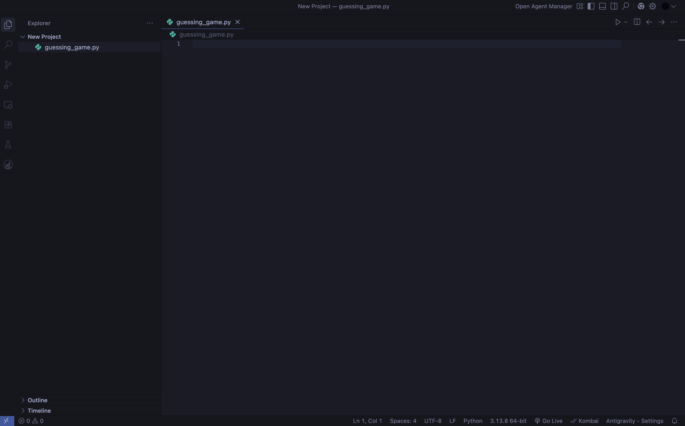

Number Guessing Game Built Using Python and Random Library
Overview
This is a number guessing game using Python that will leverage the Random library to choose a number between 0 and 25 which the player has to guess. The player has 5 tries to get it right. If the player guesses the number the game will end with a success message, if the player runs out of tries, the game ends with a failure message.
Tools / Tech used
- Python 3.10*
- Random Library*
- Antigravity*
1. Open a code editor of choice, I will be using Google's Antigravity
 This is what your screen should look like more or less if using Antigravity. *Note that on the right hand side you will usually find Agent pane, I have it closed.